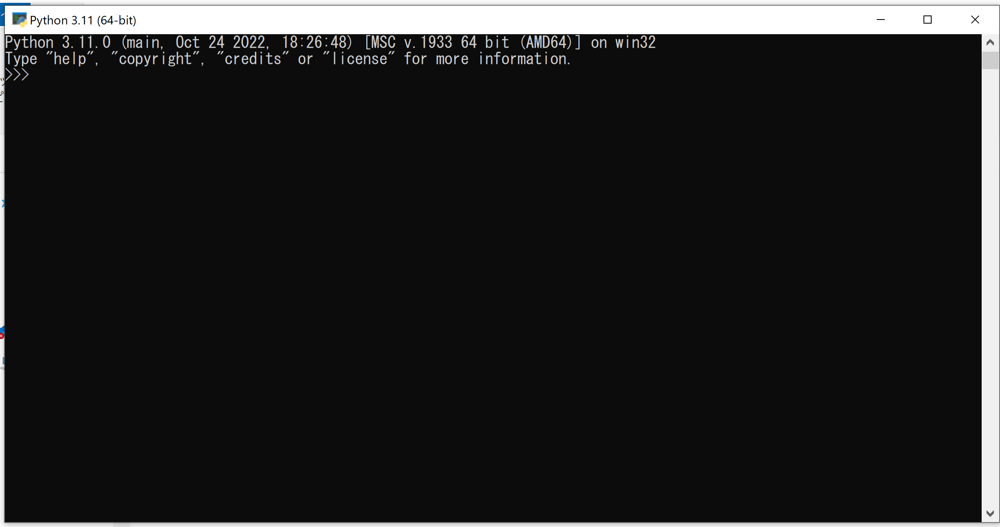

python3講習 第1回目 入門編
環境
- python 3.9 ,3.10 ,3.11
- ThinkPad L380 ubuntu22.04.3tls
- ThinkPad P1 Gen 3 Windows10
インタープリンタの起動
通常/usr/local/bin/python3.10としてインストールされている
pyhon3.10
Python 3.10.12 (main, Jun 11 2023, 05:26:28) [GCC 11.4.0] on linux
Type "help", "copyright", "credits" or "license" for more information.
>>>
Windowsの場合 
プライマプロント>>>が出てるときにunix[ctrl]+[D],win[ctrl]+[Z]を押すとインタープリターは０を返して終了する
altair@altair-ThinkPad-L380:~$ python3.10
Python 3.10.12 (main, Jun 11 2023, 05:26:28) [GCC 11.4.0] on linux
Type "help", "copyright", "credits" or "license" for more information.
>>>
altair@altair-ThinkPad-L380:~$
altair@altair-ThinkPad-L380:~$ python3
Python 3.10.12 (main, Jun 11 2023, 05:26:28) [GCC 11.4.0] on linux
Type "help", "copyright", "credits" or "license" for more information.
>>>
対話モード
altair@altair-ThinkPad-L380:~$ python3
Python 3.10.12 (main, Jun 11 2023, 05:26:28) [GCC 11.4.0] on linux
Type "help", "copyright", "credits" or "license" for more information.
>>> new_world = True
>>> if new_world:
... print("はじめ")
...
はじめ
>>>
コメントアウト
# 1つ目のコメント
one = 1 #2つ目のコメント
# そしてこれが3つ目!
text = "# これはコメントじゃない。"
数値
>>> 2+2
4
>>> 50-5*6
20
>>> (50-5*6)/4
5.0
>>> 8/5
1.6
>>> 17/3 #float
5.666666666666667
>>> 17//3 #切り下げ除算は小数点以下を捨て
5
>>> 17%3 #あまり
2
>>> 5*3+2
17
>>> 5**2
25
>>> 2**7
128
>>> 4*3.75-1
14.0
>>> width =20
>>> height =5*9
>>> width*height
900
>>> n
Traceback (most recent call last):
File "<stdin>", line 1, in <module>
NameError: name 'n' is not defined
>>>
``
対話モードでは、最後に表示した式を変数(アンダースコア)に代入してある。
```py
>>> tax = 12.5/100
>>> price = 100.50
>>> price * tax
12.5625
>>> price + _
113.0625
>>> round(_. 2)
113.06
文字列
バックスラッシュ($でクォート文字のエスケープができる
>>> 'spam eggs'# シングルクォート
'spam eggs'
>>> 'doesn\'t'# シングルクォートは\でエスケープするか...
"doesn't"
>>> "doesn't"#...ダブルクォートを使う
"doesn't"
>>> '"Yes," they said. '
'"Yes," they said.
>>> "\"Yes,\" they said."
'"Yes," they said."
>>> '"Isn\'t," they said.'
"Isn\'t," they said.'
raw文字列
>>> print('C:\some\name')# \n は改行なので
C:\some
ame
>> print(r'C:\some\name')#引用符の前のに注目
C:\some\name
列挙された文字列リテラル (引用符で囲まれたものたち) は自動的に連結される。
>>> 'Py' 'thon"
'Python'
この機能は長い文字列を分割したい時に便利
>>> text = ('ながいながい文字列を' '入れておいて繋げてやろう。 ')
>>> text
ながいながい文字列を入れておいて繋げてやろう。
インデックス指定
>>> word = 'Python'
>>> word [0] # 位置 0のキャラクタ
'P'
>>> word [5] #位置5のキャラクタ
'n'
>>> word[-1]# 最後のキャラクタ
'n'
>>> word [-2]#最後から2番目のキャラクタ
'o'
>>> word [0:2]#０から２（含まない）まで
'Py'
リスト
pythonには複合したデータのための型がいくつかあり，他の種類の値をまとめるのに使える
>>> squares=[1,4,9,16,25]
>>> squares
[1,4,9,16,25]
>>> squares[0]
1
>>> squares[-1]
25
>>> squares[-3:]
[9,16,25]
>>> squares[:]
[1,4,9,16,25]
文字列はimmutableだがリストはmutable
>>>cubes=[1,8,27,65,125]
>>>4**3
64
>>>cubes[3]=64
>>>cubes
[1,8,27,64,125]
>>>cubes.append(216)
>>>cubes.append(7**3)
>>>cubes
[1,8,27,64,125,216,343]
Python 3の制御構文
while文
while 条件: 条件がTrueの間、このブロックが繰り返し実行されます 条件がFalseになるとループが終了します
条件がTrueの間、ループが続行break文で強制的にループを終了continue文でループを再開
if文
if 条件: 条件がTrueの場合、このブロックが実行されます elif 別の条件: 別の条件がTrueの場合、このブロックが実行されます else: どの条件もTrueでない場合、このブロックが実行されます
- 条件に応じて異なるコードブロックを実行
for文
for 要素 in イテラブル: イテラブルから要素を1つずつ取り出し、このブロックが実行されます
- イテラブルはリスト、タプル、文字列、辞書など
range()関数を使用して繰り返し範囲を生成することもできる
例: while文
count = 0
while count < 5:
print(count)
count += 1
- 0から4までの数字を表示します
countが5未満の間、ループが続行
例: if文
score = 85
if score >= 90:
print("優秀")
elif score >= 70:
print("良い")
else:
print("普通")
scoreに応じて異なる評価を表示
例: for文
fruits = ["りんご", "バナナ", "オレンジ"]
for fruit in fruits:
print(fruit)
while文は条件がTrueの間、繰り返し実行
- if文は条件に応じて異なるコードブロックを実行
- for文はイテラブル内の要素を繰り返し処理
ではプログラムを書いてみよう
フィボナッチ数列を羅列させる 最大値10
0
1
1
2
3
5
8
ヒント - while文 - print() - a, b = b, a + b
答え
>>>a, b = 0, 1 # aに0を代入し、bに1を代入
>>>while a < 10: # aが10未満の間、以下の処理を繰り返す
... print(a) # aの値を表示
... a, b = b, a + b # aにbの値を代入し、bにはaとbの合計を代入
0
1
1
2
3
5
8
工夫してみる 出力末端の改行の抑制
>>>a, b = 0, 1 # aに0を代入し、bに1を代入
>>>while a < 10: # aが10未満の間、以下の処理を繰り返す
... print(a,end=',') # aの値を表示
... a, b = b, a + b # aにbの値を代入し、bにはaとbの合計を代入
0,1,1,2,3,5,8
Note
著者:Shion Noguchi